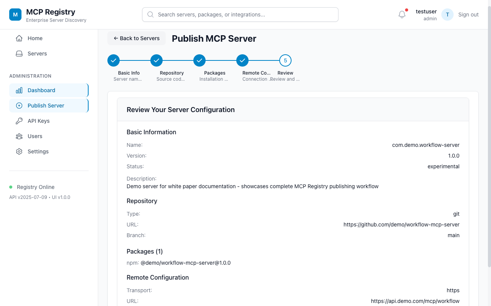

SCAN
Run Security Reviews
Agents can request release scans for dependencies, containers, secrets, and static analysis findings.
Security scanner registration scenario
A standalone walkthrough showing how a security scanner MCP server can be published, reviewed, discovered, and operated through MCP Sub-Registry.
In this demo, DeepSec is modeled as a security MCP server that exposes scan and findings tools to approved agent workflows. The registry keeps the connector discoverable while making ownership, risk tier, package metadata, and secret handling visible to platform teams.
SCAN
Agents can request release scans for dependencies, containers, secrets, and static analysis findings.
RISK
Results can be grouped by policy, severity, owner, and release gate so teams focus on the work that blocks shipping.
GOV
The registry captures approval requirement, product-security ownership, high-risk classification, and secret-marked headers.
The same sub-registry primitives work for ordinary productivity connectors and sensitive security tools. DeepSec adds a higher bar for review, but the publication shape remains consistent.

The publisher confirms name, package source, remote transport, secret headers, owner metadata, and risk classification before the entry becomes discoverable.
# publish DeepSec to the registry http POST :3010/v0/servers \ Authorization:"ApiKey $PUBLISHER_KEY" \ @docs/deepsec/deepsec-server.json # discover approved security tools http GET ":3010/v0/servers?search=security" # example registry identity name: io.deepsec/security-scanner title: DeepSec Security Scanner version: 1.4.2 owner: product-security riskTier: high approvalRequired: true
Consumers see a governed registry entry instead of a loose tool name. The metadata tells them what the connector does, how it is packaged, which team owns it, and why it carries additional approval controls.
Runs application security scans and returns prioritized findings for code, dependency, container, and secret exposure reviews.
Package transport is stdio for local execution, with an optional streamable HTTP remote for centrally hosted scanning.
{
"name": "io.deepsec/security-scanner",
"title": "DeepSec Security Scanner",
"version": "1.4.2",
"packages": [
{
"registryType": "npm",
"identifier": "@deepsec/mcp-security-scanner",
"transport": { "type": "stdio" }
}
],
"_meta": {
"com.example.owner": "product-security",
"com.example.riskTier": "high",
"com.example.approvalRequired": true
}
}
Security-oriented MCP servers need clear operational signals before agents call them. The registry entry documents those signals in a predictable place.
OWN
Product Security owns review, escalation, and lifecycle status for the connector.
KEY
API tokens and authorization headers are marked as secret so clients can avoid logging or displaying values.
POL
Environment choices expose baseline, strict-release, and audit-only modes for different workflows.
This demo is static, but it shows the kind of result summary a DeepSec MCP server could return to an agent after a scan.
Release-blocking secret and dependency findings.
Container and static-analysis issues for service owners.
Backlog findings routed to owning teams.
Mapped controls for secrets, dependencies, images, and source code.